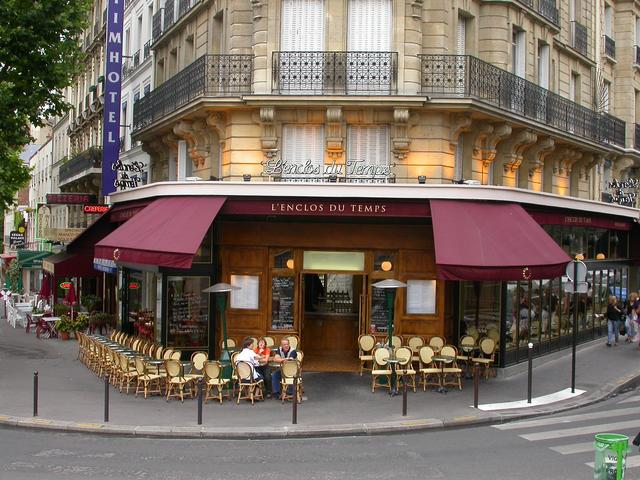

Lima can be a beautiful place. This picture of Larco Mar is right on the beach and a hot tourist destination.
If I had a white linen suit like John, we could re-inact the famous Beatles photo. Jordan said that he would willing to be Paul.

I hear the food is good in Hong Kong. But don't try eating while walking down it's crowded streets.
In my dream, I work as a couture seamstress at the famous House of Channel. Karl Lagerfeld would not be willing to dress me because I am not a size 6.
Joshua Tree is my happy place where I don't have to think about anything but the here and now.